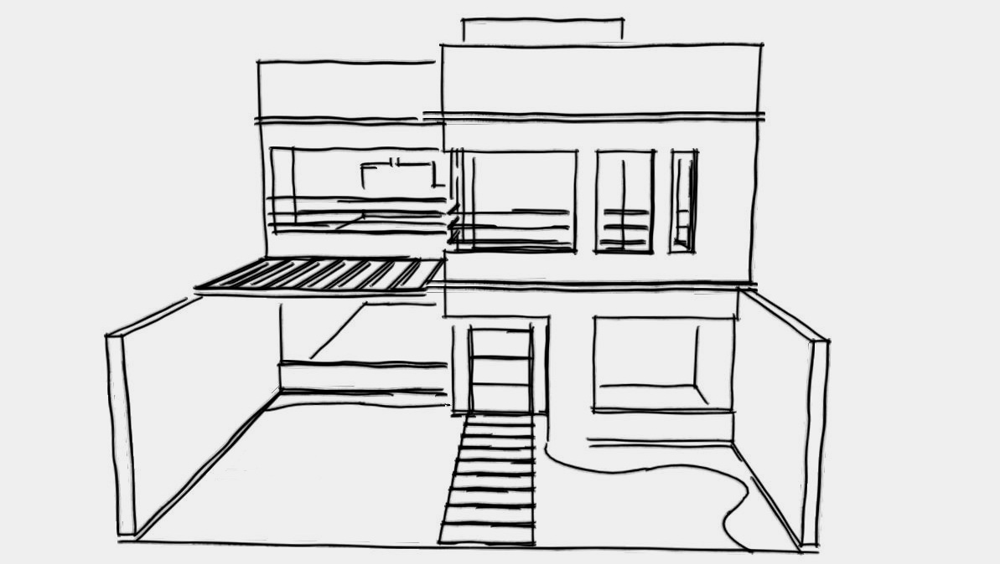
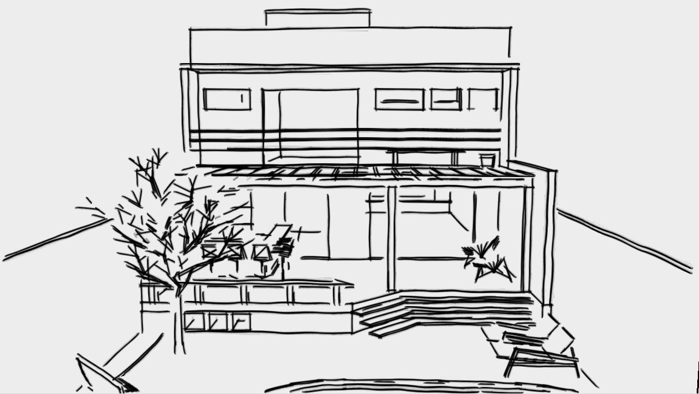
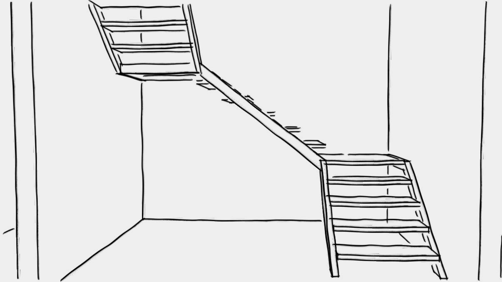
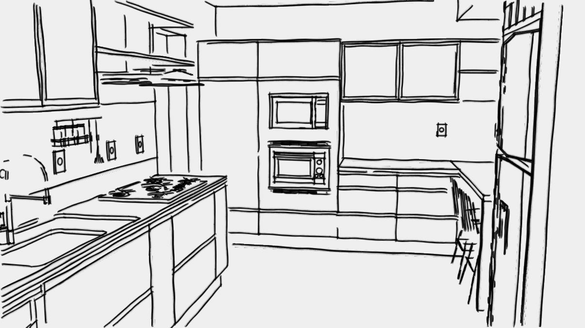
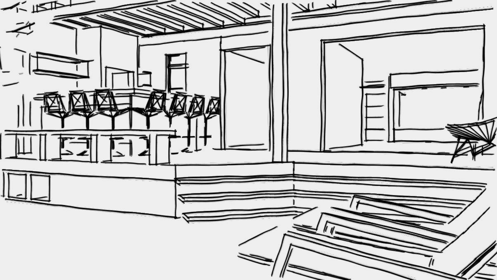

Arquitetura + interiores + paisagismo | Perpétuo Socorro | Santa Maria
O projeto recém-aprovado da residência da família pedia um melhor aproveitamento da iluminação
natural. Assim, as fachadas foram remodeladas, adotando agora grandes vãos envidraçados. O
deslocamento de um pilar na fachada frontal também contribuiu para a estética volumétrica da casa,
possibilitando uma área em balanço sobre o térreo e uma janela de canto no segundo pavimento. Na
fachada dos fundos, a criação da sacada e portas-janelas trouxe mais luz para o dormitório e a
cozinha. O layout interno também foi modificado. Na cozinha, a circulação e distribuição dos
equipamentos foi totalmente transformada. O banheiro do casal foi compartimentado, a escada e a
clarabóia acima desta foram redesenhadas. Projeto dos rebaixos em gesso e iluminação, além de
atenção na escolha dos acabamentos em todas etapas da obra foram fundamentais para a unidade do
conjunto. Paisagismo adequado aos pequenos espaços, unindo a funcionalidade com a beleza das
plantas: estacionamento e acesso social no recuo de frente; pergolado com bar e churrasqueira,
estar sob a jaboticabeira, piscina, área para banho de sol, depósito e canil no jardim dos fundos.
Santa Maria, RS.




